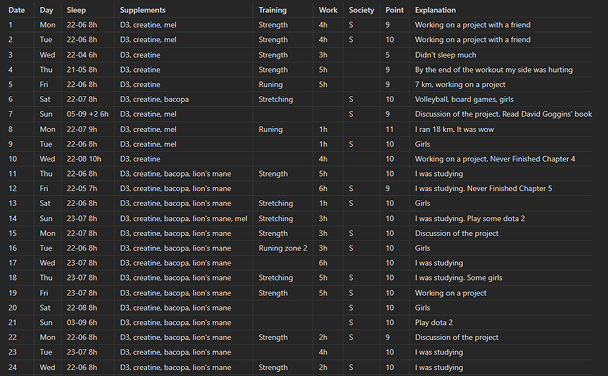

Русский язык
Русский язык
 Support author
Support author
Goal: Identifying Patterns for Peak Performance.
1. Life Metrics
I maintain a daily record of my sleep quality, supplement intake, physical activity, and work productivity. To manage this data effectively, I use a structured tracking system within Obsidian.
This may seem complicated to some, but in reality it takes a maximum of 2 minutes to fill out one day.

Why Is This Necessary?
Health tracking allows me to identify the specific factors that influence how I feel and perform. By analyzing these metrics, I can pinpoint the exact cause of changes in my well-being—whether positive or negative.
- Identifying Declines: If I experience brain fog, difficulty focusing, or increased irritability, I can review my records to find the root cause. Often, the data reveals a clear pattern, such as several nights of poor sleep or a lack of consistent exercise over the past month.
- Capturing Improvements: The system works equally well for positive changes. If my energy levels or mood improve, my records help me understand why—perhaps it coincides with a new supplement or the decision to stop eating late in the evening.
Every entry provides a deeper understanding of my health, allowing for precise adjustments that bring me closer to a state of optimal well-being.
2. Monitoring of tests
Level 1: Vital Longevity Markers (Critical)
These indicators are essential for predicting the risk of major health issues—such as heart attack, stroke, and diabetes—up to 10–20 years before symptoms appear.
- ApoB (Apolipoprotein B): The most accurate marker for cardiovascular risk. It is far more significant than standard cholesterol tests for assessing heart health.
- Fasting Insulin + Glycated Hemoglobin (HbA1c): These tests identify early signs of insulin resistance. They reflect long-term blood sugar management and the risk of future cognitive decline.
- hs-CRP (High-Sensitivity C-Reactive Protein): A key marker for systemic inflammation. High levels indicate that the body is in a state of chronic inflammatory stress.
Level 2: Health Foundation (Essential)
These tests should be performed every six months to monitor your body's overall functional health.
- Homocysteine: Levels above 10 can be toxic to the brain and blood vessels, often signaling a deficiency in B vitamins.
- TSH (Thyroid-Stimulating Hormone): The primary regulator of your energy and metabolism. If TSH is out of balance, other health optimizations will be less effective.
- Ferritin: Measures your body’s iron stores. Low ferritin leads to poor oxygen delivery and chronic fatigue, which directly impacts mental and physical performance.
- Vitamin D (25-OH): A vital nutrient for immune function, bone health, and mood regulation.
- Complete Blood Count (CBC): A standard baseline test to check for anemia, infection, and general immune health.
Level 3: Hormonal Balance and Recovery
These markers determine your energy levels, motivation, and physical recovery.
- Testosterone (Total + Free): Vital for maintaining muscle mass, bone density, and mental drive.
- SHBG (Sex Hormone Binding Globulin): Shows how much testosterone is actually available for your body to use.
- Estradiol: Important for protecting joints and blood vessels in both men and women.
- Morning Cortisol: A primary indicator of stress levels. This helps determine if you are experiencing physical or mental burnout.
Level 4: Metabolic and Organ Function
A detailed assessment of the body’s vital organs and nutrient processing.
- ALT, AST, GGT: Key enzymes used to evaluate liver health and function.
- Creatinine + Urea: Essential markers for kidney function, especially important for those on high-protein diets.
- Lipid Panel (LDL, HDL, Triglycerides): Standard markers that provide additional context to your cardiovascular health alongside ApoB.
- RBC Magnesium (Magnesium in Red Blood Cells): Since standard blood serum tests are often inaccurate, this test provides a better look at your actual magnesium levels, which are critical for over 300 bodily processes.
Level 5: Specialized and Long-term Tests
These tests are performed infrequently (every few years or once in a lifetime) for deep health strategy.
- Lp(a) (Lipoprotein a): A genetic marker for early heart disease risk. This is typically tested only once in a lifetime.
- Genetic Testing: Provides insight into how your body processes nutrients, caffeine, and your predisposition to certain age-related conditions.
- Gut Microbiota Analysis: Evaluates the balance of bacteria in your digestive system, which is closely linked to immunity and mood.
- STI Screening: A fundamental part of health safety that should be checked annually or when changing partners.